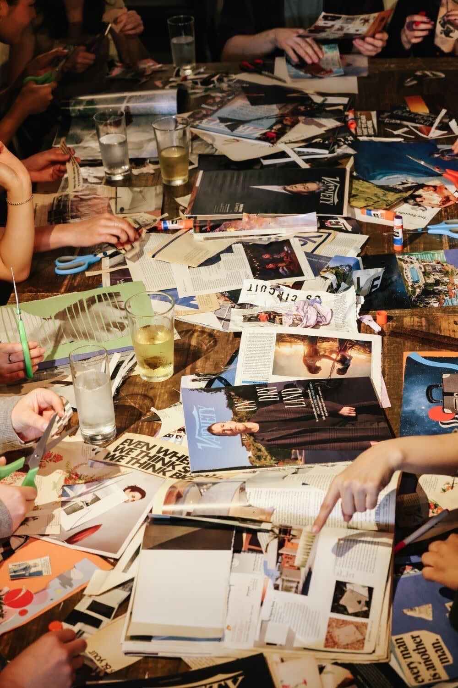
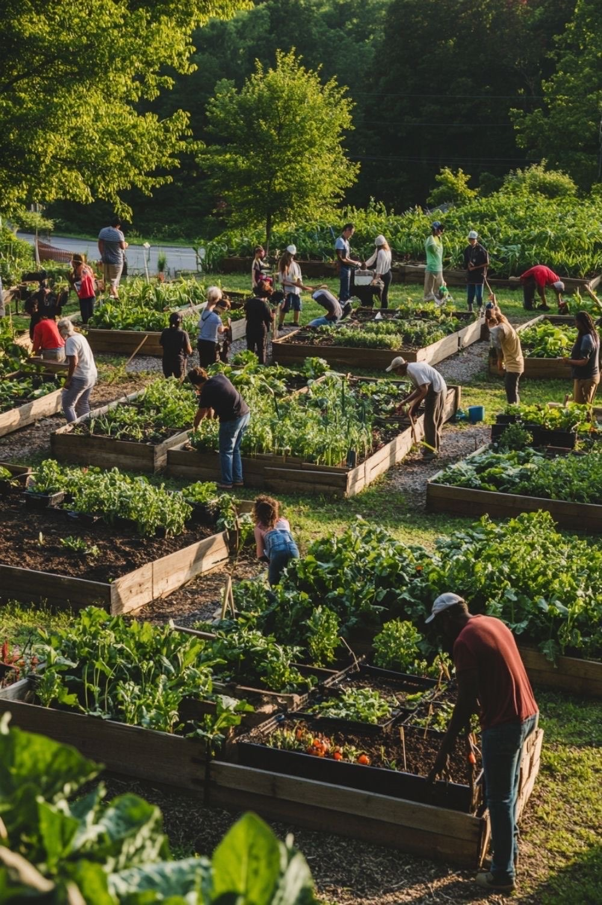

Analyse
Your brand identity, audience behaviour, existing loyalty, and opportunities.
We help fashion businesses create loyal, connected communities — leading to stable revenue, sustainable growth, and stronger social impact.
Community Ecosystem
Values
Avg. sales growth
+75%
for brands using our community ecosystem model
About Us
Community Building Agency was created for fashion and creative businesses navigating an uncertain commercial environment. As visibility becomes harder to gain and sustain, customer retention becomes more challenging, and paid reach less predictable, community offers a more resilient way to grow. We help brands build community as a strategic growth system that strengthens loyalty, deepens customer relationships, sharpens positioning, supports long-term sales and creates value impact the product.
Who We Help
What We Do
Attracting the right people, helping them connect, and keeping them coming back.
We turn these elements into a strategic model tailored to your brand. Clear, implementable, and aligned with your values, goals and challenges.
How It Works
Your brand identity, audience behaviour, existing loyalty, and opportunities.
Shared identity, purpose, values, and what your community should stand for.
Rituals, touchpoints, engagement strategy, loyalty systems, and connection pathways.
Activation concepts, events, collaborations, and content that bring people in.
Ongoing rituals and value cycles that keep your audience engaged and connected.
Behaviour-based insights → improvement → continuous growth.



Our Services
From a single strategy session to a fully implemented community ecosystem — three ways to bring community into your brand.
Why Community?
Instead of chasing one-off campaigns, you cultivate a living ecosystem that sustains your brand — even when algorithms shift and trends move on.
Why Us

Founder
Community Building Agency was founded by Lika Kurbanovaite, an experience-led strategist with a background across tourism and events management, luxury hospitality, experiential marketing, fashion entrepreneurship and creative production.
Her experience includes contributing to large-scale event projects in major Lithuanian venues, including productions involving high-profile artists and audiences of thousands, alongside client-facing work in premium hospitality, fashion and brand experience contexts. This background brings a practical understanding of audience engagement, event operations, premium client service and experience-led brand touchpoints that encourage participation, loyalty and repeat interaction.
Next Step
Book your strategy session to explore what community could look like for your fashion business.
Prefer to start with questions? Reach out and we'll help you find the right entry point.